Emacs
Mario Román
Created: 2016-11-20 Sun 12:09
Introducción
¿Por qué Emacs?
- Editor de texto plano
- Con intérprete de Lisp
- Software libre
Partes
Esta charla va a constar de cuatro partes:
- 1. Preparando Emacs, en la que vamos a instalar y aprender a configurar Emacs.
- 2. Usando Emacs, en la que vamos a ver ejemplos de uso.
- 3. Extendiendo Emacs, muestra del potencial de Emacs.
- 4. Mi configuración, paquetes que personalmente encuentro útiles.
Preparando Emacs
Instalación de Emacs
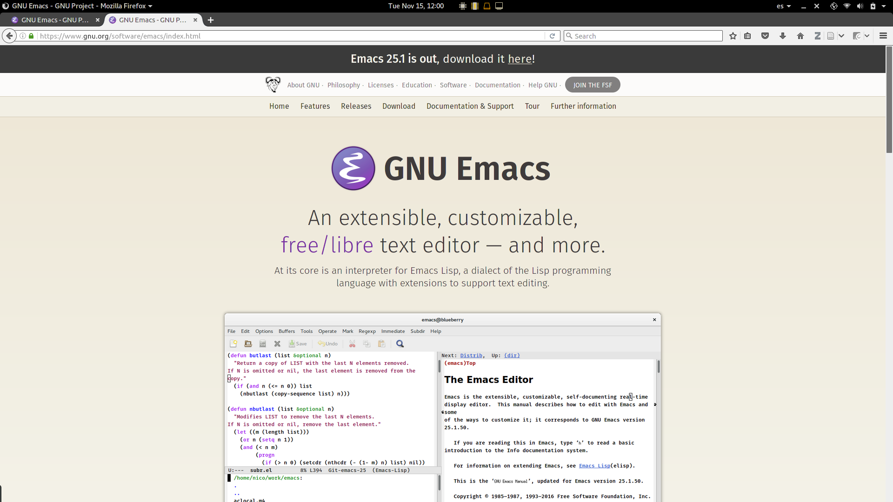
ARCH: sudo pacman -S emacs UBUNTU: sudo apt install emacs25
Pantalla de incio

Abriendo un archivo, cambiando buffers

Abrir nuevo archivo con un comando:
Alt+x find-file || M-x find-file
O con un atajo de teclado:
Ctrl+x Ctrl+f || C-x C-f
Y podemos cambiar entre archivos abiertos con:
Ctrl+x <left> || C-x left Ctrl+x <right> || C-x right
Teclas básicas
| Atajo | Comando | Acción |
|---|---|---|
| C-x C-s | save-buffer | Guardar |
| C-x C-f | find-file | Abrir |
| C-g | keyboard-quit | Aborta comando |
| C-s | isearch-forward | Buscar |
| C-w | kill-region | Cortar |
| M-w | kill-ring-save | Copiar |
| C-y | yank-pop | Pegar |
C-g interrumpe cualquier comando.
En C-h podéis buscar ayuda sobre comandos. CUA-mode es una opción.
Intentad aprender los atajos teniéndolos en un folio.
Archivo de configuración

Dos posibles nombres de los archivos de configuración en Emacs:
~/.emacs ~/.emacs.d/init.el
Reiniciando la configuración de Emacs:
mv ~/.emacs ~/.emacs.old
Preferencias

Preferencias en el archivo de configuración
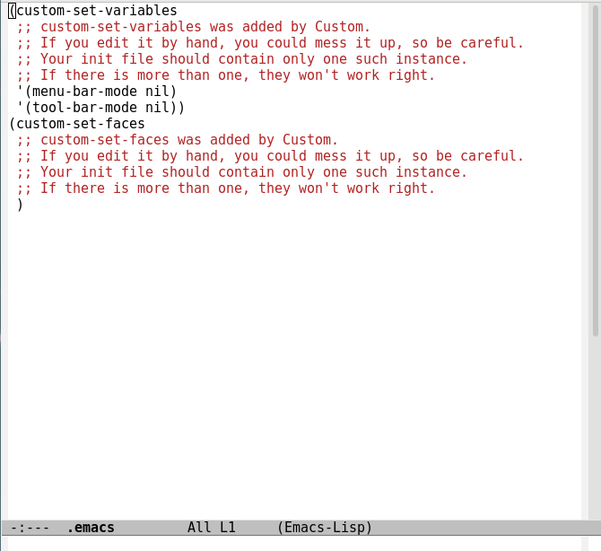
Extensiones: Preparando los repositorios

Entramos en:
M-x customize-group package // package-archives
Y añadimos:
melpa http://melpa.milkbox.net/packages
Y podemos instalar con:
M-x package-list-packages
MELPA
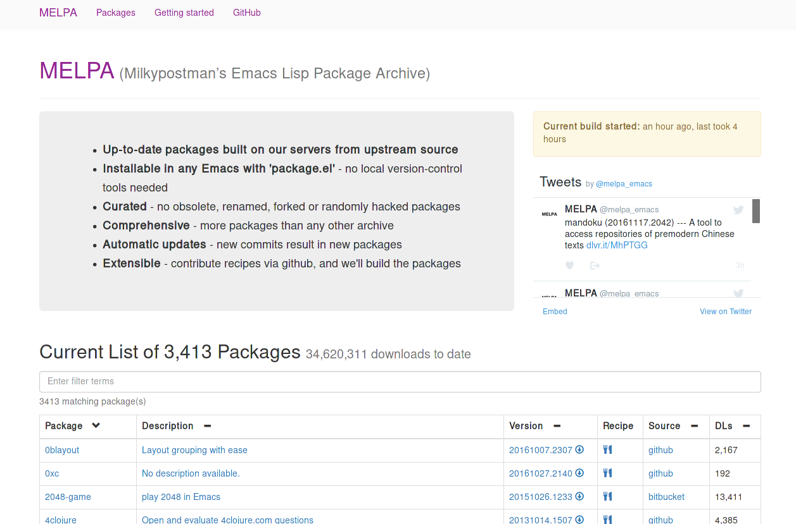
Usos de Emacs
Programación
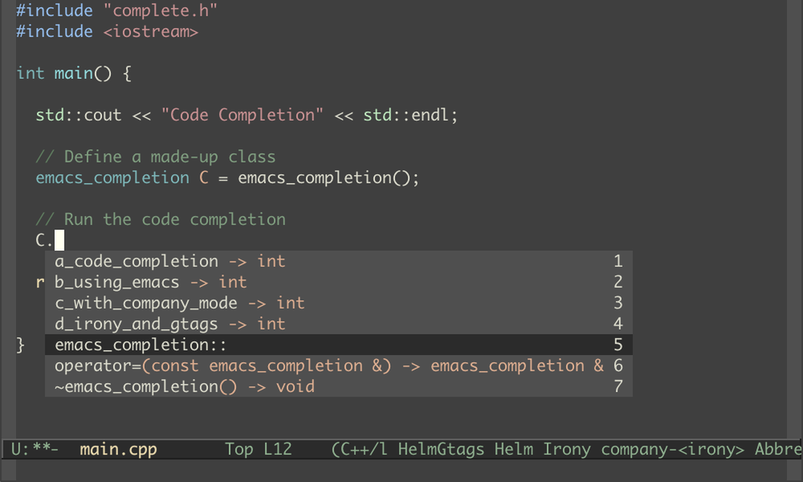
C completion in Emacs - Gregory Stein
Programación
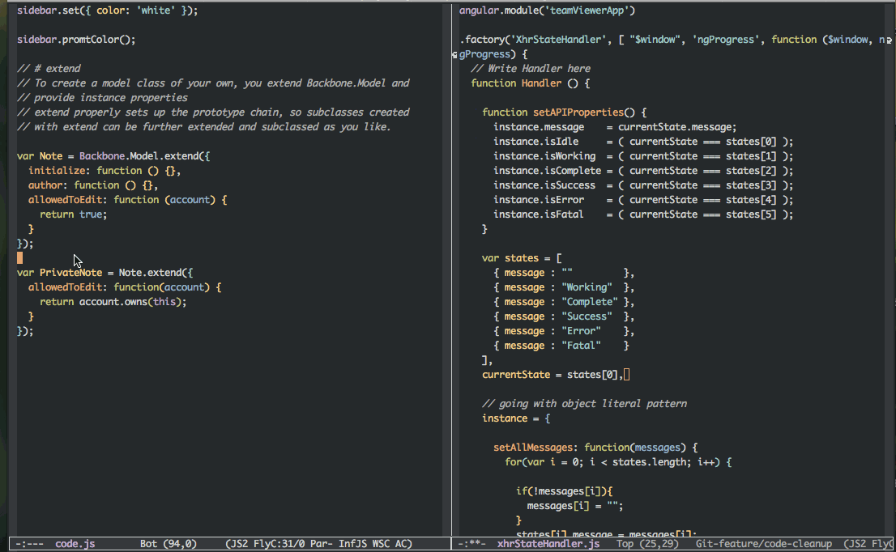
Setting up Emacs for development - Vinit Kumar
Org-mode

Getting organized with org-mode - Correl Roush
Apuntes en Latex

Imagen de una pregunta en StackOverflow.
Paquetes y configuraciones
Múltiples cursores

ace-mc, Josh Moller-Mara
eww
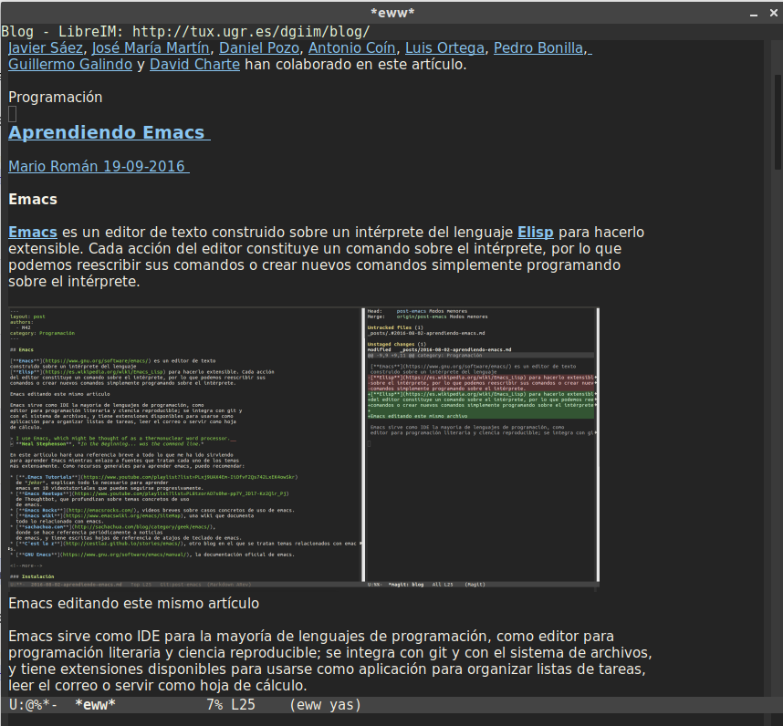
Macros
Registran una serie de acciones y las repiten:
| f3 | Empieza a grabar |
| f4 | Termina de grabar |
| f4 | Repite la macro |
Emacs server
emacs --daemon # runs at startup emacsclient # opens a new client
Emacs normal vs. Emacs daemon - Jae-oh Kim
Esta presentación
¡Esta presentación está escrita en Emacs con org-mode!
Código con org-babel
def prime(p) return (2..Math.sqrt(p)).none? { |d| p % d == 0 } end [prime(42),prime(97),prime(5),prime(7),prime(9)]
| false | true | true |
UMLs con artist-mode

Poor's Man UML - Emacs Artist Mode
Mi configuración
Magit para repositorios
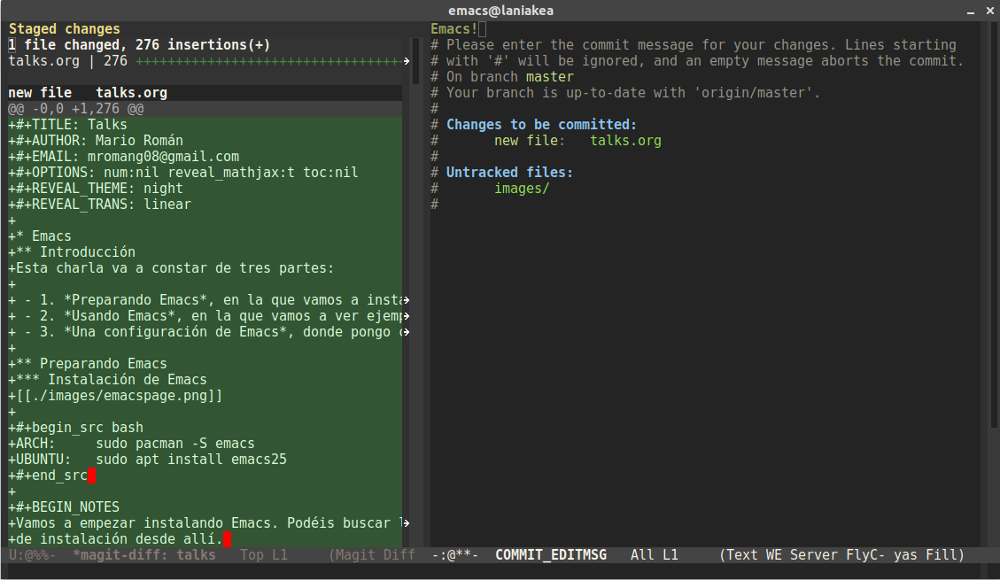
Ayuda a la traducción
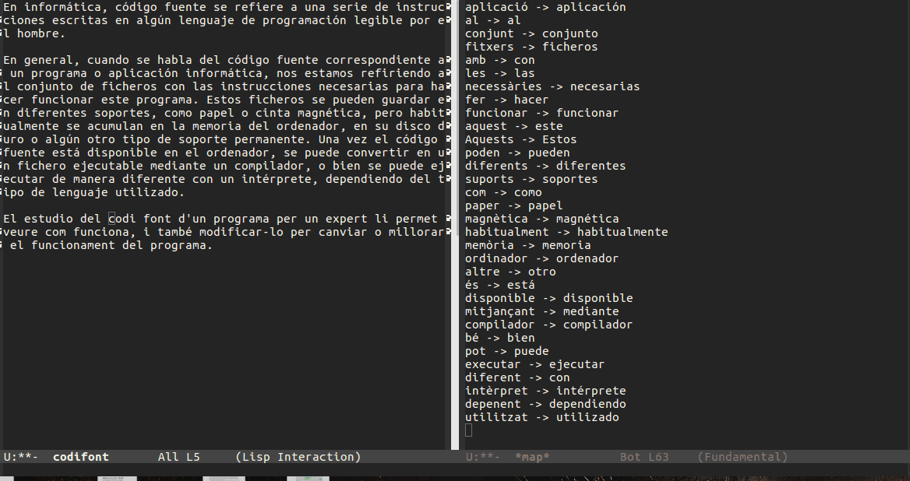
Blog usando org-page
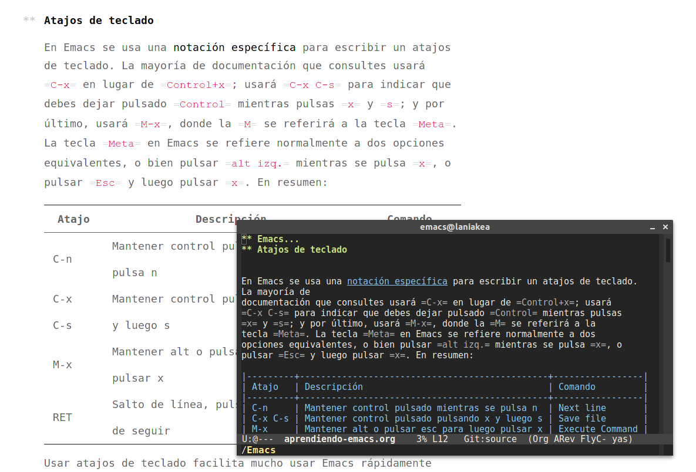
Matemáticas en org-mode

Imágenes en org-mode

Código en org-mode

Integración con sage
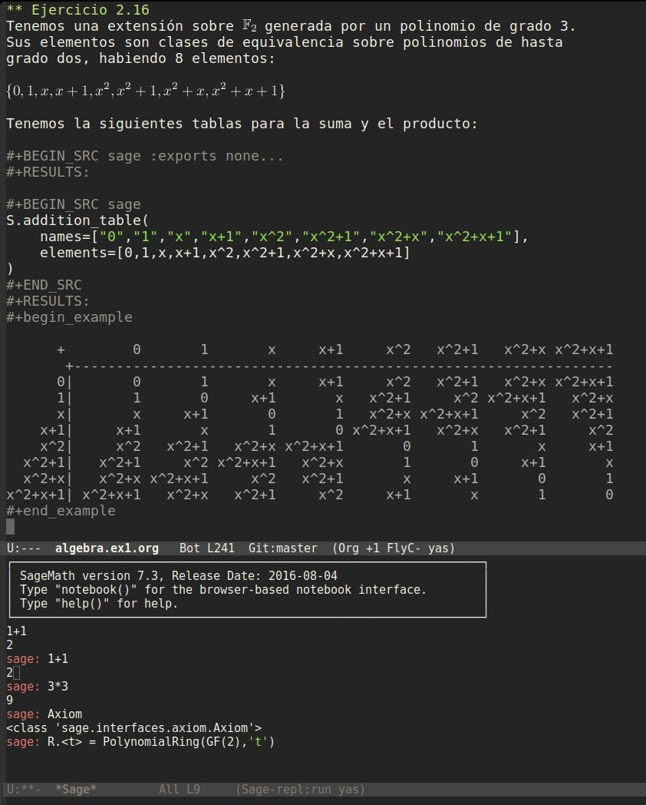
Sage dibujando gráficas
x = var('x')
p1 = parametric_plot((cos(x),sin(x)),(x,0,2*pi),rgbcolor=hue(0.2))
p2 = parametric_plot((cos(x),sin(x)^2),(x,0,2*pi),rgbcolor=hue(0.4))
p3 = parametric_plot((cos(x),sin(x)^3),(x,0,2*pi),rgbcolor=hue(0.6))
show(p1+p2+p3)
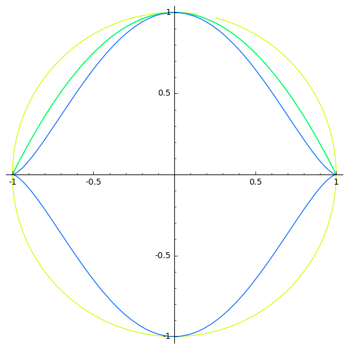
Referencias
Artículo del blog
Todo lo que explico en esta presentación está en:
Recursos
Páginas de recursos sobre Emacs:
En estos blogs se listan noticias, tutoriales e ideas para la configuración de Emacs.
Emacs StackExchange

How Emacs changed my life
Es el título de una charla de Yukiro Matsumoto:
- Emacs taught me freedom for software.
- Emacs taught me how to code.
- Emacs taught me the power of Lisp.
- Emacs taught me how to implement a core language.
- Emacs taught me how to implement a garbage collector.
- Emacs helped me to code and debug.
- Emacs helped me to write and edit text/mails/documents.
- Emacs helped me to be an effective programmer.
- Emacs made me a hacker.
- Emacs has changed my life.
LibreIM

Seguid a LibreIM para más seminarios. ¡Podéis colaborar con el blog o preparando seminarios!
- Twitter:
@libreim_ - Blog:
tux.ugr.es/dgiim - Telegram:
https://telegram.me/libreimseminarios